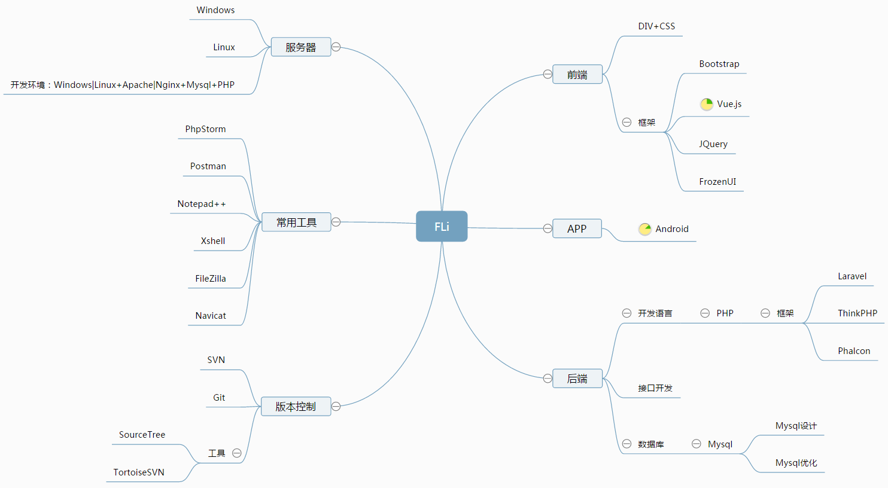

PHP工程师

个人信息
E-mail：277023115@qq.com
Github：https://github.com/Fanli2012
年龄：28 | 学历：本科 | 学校：三明学院 | 专业：网络工程
证书：全国计算机等级三级
开源项目
lqycms，基于laravel框架的内容管理系统：https://github.com/Fanli2012/lqycms
72pcms，基于thinkphp3.2的CMS：https://github.com/Fanli2012/72pcms
个人技能
熟练PHP开发语言，能独立开发网站（前后台）。例如：基于Laravel的LQYCMS
熟悉框架：Laravel / Thinkphp框架(3.1>3.2>5.0)。
根据需求分解出相应的模块，对模块进行预估并分配。根据需求、原型建立表，给出相应接口。
熟悉Mysql数据库设计，了解Redis数据缓存。
熟悉接口的开发，及配合安卓/IOS/前端人员测试接口。
熟练Windows、Linux操作系统VPS或者服务器的维护。
精通HTML、DIV+CSS。熟悉BootStrap框架、FrozenUI移动web框架，响应式布局网页开发，及浏览器兼容性的解决。
了解JavaScript，熟悉JQuery、Ajax。
熟悉版本管理、自动化部署工具：Git、SVN / Composer。
工作经历
厦门简会信息科技有限公司
项目1：厝边速购
包含配送端APP和商城端APP。订单、购物车、商品收藏、收货地址、注册登录、消息公告、优惠券、积分、签到、退货退款、报事报修、停车缴费、对接第三方接口等
项目2：单创、ABM
功能：购物；商城；邀请好友(分销)
说明：根据需求原型->划分模块->建表->定接口->分配->开发
厦门豆玩互动信息科技有限公司
项目1：淘刷网商城(PC端/微信端/IOS安卓接口) ，独立负责
功能：订单管理，下单/发货/退货；公告资讯管理；商品管理；会员管理，等级；商品定制；积分兑换红包；提现记录；3级分销，佣金，积分；购物车等等…
项目2：番茄女王(移动端)，协助开发
功能：留言；预约；商城；邀请好友(分销)
项目3：万翔商城（移动端/IOS安卓接口），协助开发
功能：个人中心；登录注册，积分；签到；优惠券；订单列表等
武夷山市继昌茶庄发展有限公司
曾在武夷山市继昌茶庄发展有限公司做过技术员。对公司网站页面进行修改，专题页面的制作，服务器的日常维护，保证网站系统运行正常。页面编辑、产品上传、制作和发布，不断丰富、更新、优化网站页面的内容。用帝国cms开源程序二次开发www.jichang1919.com，包含前台页面的制作html/div+css，及网站栏目的的规划创建。对于独立中小型企业网站的开发非常熟练，从建站到发布，符合SEO优化的网站。
© FLi